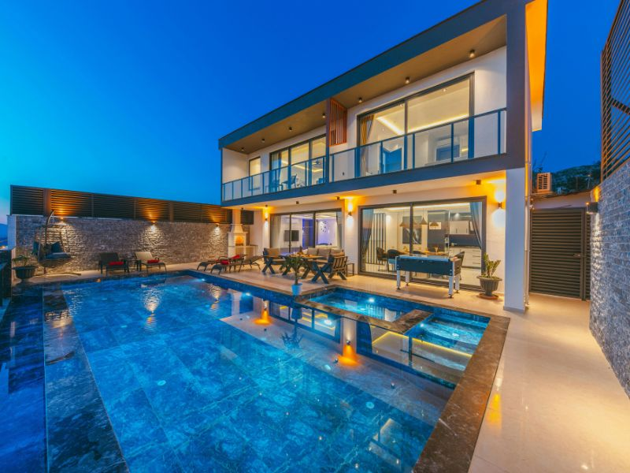

Soluciones integrales para sus proyectos de construcción
En Prolici ofrecemos una amplia gama de servicios para cubrir todas las necesidades de su proyecto de construcción. Desde el diseño inicial hasta la entrega final, nuestro equipo de profesionales trabaja con dedicación y excelencia para garantizar resultados que superen sus expectativas.
Nuestro enfoque integral nos permite coordinar eficientemente todas las etapas del proyecto, asegurando coherencia, calidad y cumplimiento de plazos y presupuestos.
Creando espacios únicos
En Prolici, el diseño arquitectónico es el punto de partida de cada proyecto. Nuestro equipo de arquitectos expertos trabaja en estrecha colaboración con los clientes para comprender sus necesidades, visión y estilo, creando diseños innovadores y funcionales que superan sus expectativas.
Transformamos sus ideas en conceptos arquitectónicos viables y atractivos.
Desarrollamos plantas, cortes y fachadas detallados para una correcta ejecución.
Creamos espacios interiores funcionales, estéticos y adaptados a sus necesidades.
Ofrecemos representaciones visuales realistas para una mejor comprensión del proyecto.
Gestionamos todos los trámites necesarios para la aprobación de su proyecto.

Eficiencia y control en cada etapa
Prolici garantiza el éxito de su proyecto mediante una planificación y gestión rigurosa. Nuestro equipo se encarga de coordinar todos los aspectos de la construcción, desde la elaboración del presupuesto y el cronograma hasta la supervisión de la obra y la gestión de los recursos.
Desarrollamos presupuestos transparentes y precisos para una mejor planificación financiera.
Creamos cronogramas realistas y eficientes para optimizar tiempos de ejecución.
Gestionamos eficientemente todos los recursos humanos y materiales necesarios.
Monitoreamos constantemente la ejecución para garantizar los más altos estándares.
Anticipamos y resolvemos problemas potenciales antes de que afecten el proyecto.
Rapidez, eficiencia y versatilidad
Prolici se especializa en construcción ligera, un sistema moderno y eficiente que ofrece numerosas ventajas en comparación con los métodos tradicionales. Utilizamos materiales innovadores y técnicas avanzadas para construir estructuras resistentes, duraderas y de alta calidad en tiempos reducidos.
Implementamos soluciones versátiles y rápidas para divisiones interiores y acabados.
Utilizamos perfiles de acero galvanizado para crear estructuras resistentes y ligeras.
Implementamos soluciones eficientes para cubiertas y entrepisos con excelente desempeño.
Desarrollamos sistemas prefabricados que optimizan tiempos y recursos.
Detalles que hacen la diferencia
En Prolici, sabemos que los acabados son fundamentales para crear espacios que reflejen la personalidad y el estilo de nuestros clientes. Nos encargamos de cada detalle, desde la selección de los materiales hasta la ejecución impecable, para lograr resultados que superen las expectativas.
Garantizamos superficies perfectas como base para acabados de alta calidad.
Aplicamos acabados de pintura profesionales con técnicas especializadas.
Colocamos todo tipo de pisos y revestimientos con precisión y calidad.
Fabricamos e instalamos elementos de madera con acabados de primera.
Completamos los espacios con elementos funcionales y decorativos.

Funcionalidad y seguridad garantizadas
Prolici cuenta con un equipo de profesionales cualificados para realizar instalaciones eléctricas y de plomería que cumplen con los más altos estándares de calidad y seguridad. Nos aseguramos de que cada sistema funcione de manera eficiente y confiable, brindando confort y tranquilidad a nuestros clientes.
Desarrollamos instalaciones eléctricas seguras y eficientes para todo tipo de proyectos.
Implementamos soluciones de iluminación funcionales y decorativas.
Realizamos instalaciones de agua potable y aguas residuales con materiales de primera calidad.
Implementamos soluciones de aire acondicionado y ventilación eficientes.
Ofrecemos servicios de mantenimiento preventivo y correctivo para todas las instalaciones.
Tu proyecto listo para disfrutar
Prolici se encarga de la entrega final de tu proyecto, asegurando que cada detalle esté en perfecto estado y que se cumplan todas tus expectativas. Nuestro objetivo es brindarte una experiencia sin complicaciones y que puedas disfrutar de tu nuevo espacio desde el primer momento.
Realizamos una revisión exhaustiva para garantizar que todo esté en perfectas condiciones.
Dejamos el espacio impecable y listo para su uso inmediato.
Proporcionamos toda la documentación técnica y garantías correspondientes.
Ofrecemos orientación para el correcto uso y mantenimiento de las instalaciones.

Contáctenos hoy mismo para una consulta gratuita y descubra cómo podemos ayudarle a hacer realidad su visión.
Solicitar Cotización